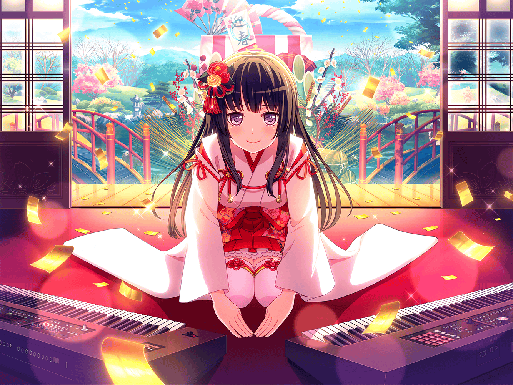

ショッピングモール
まりな
買い出しに来たけど……
どこもお正月一色って感じだね……
どうせなら、CiRCLEもお正月仕様にしてみる？
まりな
あら……？
あそこにいるのって、
燐子ちゃんじゃないかしら？
まりな
おーい！ 燐子ちゃーん！
燐子
わ……！？ ……あ、ま、まりなさん……
それに、{{userName}}さんも……
あけまして、おめでとう……ございます……
まりな
あけましておめでとう！
今年もよろしくね！
燐子
は、はい……よろしくお願いします……
まりな
今日は、あこちゃんとお買いものとか？
燐子
は、はい……待ち合わせしてるところです……
お正月に……約束した……ゲームを、買いに……
まりな
そうなんだ！
あこちゃんとは、初詣も一緒だったの？
燐子
はい……２人で、振袖を着て行って……
普段は、モノトーンの服なので……
ちょっと、恥ずかしかったです……
まりな
へぇ～！
私も見たかったな、燐子ちゃんの晴れ着姿！
まりな
……そうだ！
今度ライブの時、振袖でやるのはどう？
燐子
た、楽しそうですけど……袖が邪魔になって……
大変かもしれません……
まりな
それもそっか～……
ねえ、{{userName}}さん、いいアイディアない？
まりな
なるほど。袖のところだけ、ライブ仕様にする、かあ……
振袖じゃなくなるけど、いいかもね！
燐子
そ、そうですね……
それなら、何とかなりそう……
少し、考えてみます……
燐子
そういえば、お参り……
弦巻さん達とも……一緒だったんです……
まりな
こころちゃんと！？
何だか不思議な組み合わせだね……
燐子
初めて……ちゃんと、お話したんですけど……
すごく元気で……あと、ちょっと変わってました……
燐子
でも、何だか……全身から、エネルギーが……
あふれているような人で……最初は……
びっくりしましたけど……とても刺激的でした……
まりな
こころちゃんには、いまだに私達も
驚かされる時があるもんね
燐子
いままで……ハロハピの曲を聴くと……
どうやったら、こんなに……自由な発想で、
曲が作れるんだろう……って思ってたんですけど……
燐子
弦巻さんと話して……その理由が……
よくわかりました……
燐子
できれば……もっと弦巻さんとも……
お話してみたいです……ちょっと、緊張しますけど……
まりな
あはは、頑張って！
こころちゃんなら、きっといつでも歓迎だと思うよ
燐子
は、はい……そうだといいんですけど……
燐子
あ……あこちゃんから、メール……
まりな
それじゃあ邪魔しちゃ悪いし、
私達はこの辺で！ またね、燐子ちゃん！
燐子
わ、わたしも、楽しかったです……
お話聞いてくれて、ありがとうございました……